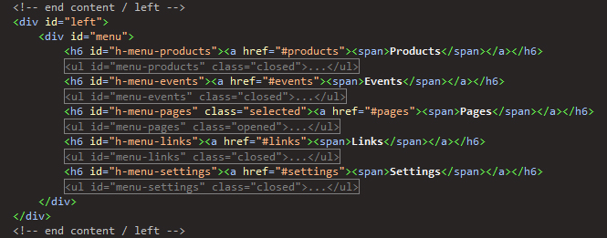

“Smooth Admin” Documentation by “Mike Geise” v1.0
“Smooth Admin”
Created: April 2010
By: Mike Geise
Email: mike343@gmail.com
Thank you for purchasing Smooth Admin. If you have any questions that are beyond the scope of this help file, please feel free to email via my contact form here. Thanks so much!
Table of Contents
A) HTML Structure - top
This theme can either be a fluid layout with two columns or with no left column. Also included is a fixed width version with or without the left column. The html files that demonstrates this behavior has been named appropriately.
- index.html
Full width layout with left column - index-fixed.html
Fixed width layout at 960 pixels with left column - index-fixed-no-column.html
Fixed width layout at 960 pixels without left column - index-no-column.html
Full width layout without left column
All of the information within the main content area is nested within a div with an id of "content". The left sidebar content is within a div with an id of "left" and the right sidebar content is within a div with an id of "right". Most of your editing and content will be within the div with the id of "right".
How to Add a Item to the Left Navigation Menu - top
To add a menu item and sub links you must give the h6 heading a unique id in the following format "h-menu-[uniqueid]" and you must also give the unordered list (ul) under the h6 heading / link a unique id with the following format "menu-[uniqueid]". The link href must contain the name of the id with the following format "#uniqueid".
The following example below will have the unique id named products and as you can see the Products link href contains "#articles" and the unordered list (ul) which contains the sub links has the id "menu-products"
Example:
<h6 id="h-menu-products"><a href="#products"><span>Products</span></a></h6> <ul id="menu-products" class="closed"> <li><a href="">Manage Products</a></li> <li class="last"><a href="">Add Product</a></li> </ul>

How to Add a Tab - top
To add a tab you will simply add another list item (li) to the unordered list (ul) but the href of the hyperlink must contain a unique id of the content you wish to display for this tab.
The following example below will have the unique id named cars and as you can see the Cars link href contains "#cars" and the div below the unordered list (ul) contains the id "cars"
Example:
<div id="vehicles" class="box"> <div class="title"> <h5>Vehicles</h5> <ul class="links"> <li><a href="#trucks">Trucks</a></li> <li><a href="#cars">Cars</a></li> </ul> </div> <div id="trucks"> </div> <div id="cars"> </div> </div>

How to Add a New Set of Tabs - top
To add new set of tabs you will simply create a unordered list (ul) with the links (refer to How to Add a Tab) within the context box in the div with the class "title". All of this must be nested within a div with a unique id.
You will also have to add some javascript within the head section of your html file.
The following example below demonstrates how this is done. The unique id for this example is "mycontent".
You can view detailed examples at the following page: http://jqueryui.com/demos/tabs/
Example:
Javascript:
<script type="text/javascript">
$(document).ready(function () {
$("#mycontent").tabs();
});
</script>
Html:
<div id="mycontent" class="box"> <div class="title"> <h5>Vehicles</h5> <ul class="links"> <li><a href="#trucks">Trucks</a></li> <li><a href="#cars">Cars</a></li> </ul> </div> <div id="trucks"> </div> <div id="cars"> </div> </div>
B) CSS Files and Structure - top
Smooth Admin has a total of six CSS files. There is also multiple color scheme styhesheets located in the folder "resources/css/colors"
The first stylesheet is a generic reset file located in "resources/css/reset.css". Many web browsers interpret the default behavior of html elements differently. By using a general reset CSS file, we can work round this. Keep in mind, that these values might be overridden somewhere else in the file
The main stylesheet located in "resources/css/style.css" contains all the design elements, positioning and specific stylings for the page
We also have additional stylesheets that once used will change either the heading, columns or the width of the page.
- style_alternate.css
this stylesheet will give you the alternate header. - style_full.css
this stylesheet will keep the layout at a liquid width with no column. - style_fixed.css
this stylesheet will keep the layout at a fixed width of 960 pixels. - style_fixed_full.css
this stylesheet will keep the layout at a fixed width of 960 pixels with no column.
All of the stylesheets are separated into sections like the following example below:
/* ----------------------------------------------------------- header -> dashboard ----------------------------------------------------------- */ some code /* ----------------------------------------------------------- footer ----------------------------------------------------------- */ some code etc, etc.
If you would like to edit a specific section of the site, simply find the appropriate label in the CSS file, and then scroll down until you find the appropriate style that needs to be edited.
C) Javascript - top
Most of the time you will not need to edit any of the javascript files but, if you would like to take a peek I have documented the custom javscript I wrote thoroughly.
Smooth Admin makes use of nine javascript files.
- jquery-1.4.2.min.js
- jquery-ui-1.8.custom.min.js
- jquery.ui.selectmenu.js (select styling)
- jquery.flot.min.js (charting libary)
- smooth.js (color picker, messages fade away)
- smooth.chart.js (traffic statistics chart)
- smooth.table.js (table checkboxes)
- smooth.form.js (select, button styling and date picker)
- smooth.menu.js (drop down menu effects)
- jquery is a javascript library that greatly reduces the amount of code that you must write.
- jquery ui provides abstractions for low-level interaction and animation, advanced effects and high-level, themeable widgets, built on top of the jquery javascript library
- jquery select menu allows you to style select lists.
- jquery flot is used for charting. An example of this is the traffic statistics chart.
- In addition to the jquery scripts, I have written code for the left navigation menu, tabs and table checkboxes that is all contained in javascript files starting with smooth.[function].js located in the resources/scripts folder.
If you would like to learn more about jquery or jquery ui you can visit the following urls.
Jquery UI & Form Elements
I have used the following jquery ui widgets to style and add extra functions to certain form elements
Date Picker
To use the date picker on any text box you must include the following javascript in the head section your page. The example below will add a date picker to the textbox with the id "published". You can also view more demos and options at following page: http://jqueryui.com/demos/datepicker/
<script type="text/javascript">
$("#published").datepicker({
showOn: 'button',
buttonImage: 'resources/images/calendar.gif',
buttonImageOnly: true
});
</script>
Styled Select Menus
The styled select menus is based on the jquery ui selectmenu, This plugin is still in the planning stages but so far has proven to be stable. You can read more about the selectmenu script here.
To style any select menu on your page you must simply include the following javascript in the head section of your page.
<script type="text/javascript">
$("select").selectmenu({
style: 'dropdown',
width: 200,
menuWidth: 200
});
</script>
Styled Submit Buttons
The custom submit buttons are made possible by the jquery ui button widget. You can read more about the button widget at the following page: http://jqueryui.com/demos/button/
For any submit,reset or regular button you would like to style you must include the following javascript in the head section of your page. The first example below will style any buttons that are a input with the type submit. The second example will style both inputs that have the type submit or reset.
Submit Buttons
<script type="text/javascript">
$("input:submit").button();
</script>
Submit & Reset Buttons
<script type="text/javascript">
$("input:submit, input:reset").button();
</script>
Jquery Auto Complete
The auto complete is part of jquery ui. You can read more about auto complete at the following page: http://docs.jquery.com/UI/Autocomplete
For any input that has the type of text you would like to have auto complete functionality you must include the following javascript in the head section of your page. The example below will provide auto complete functionality for the input with the id of products.
<script type="text/javascript">
$("input#products").autocomplete({
source: ["c++", "java", "php", "coldfusion", "javascript", "asp", "ruby"]
});
</script>
Jquery Flot (Charting)
Jquery Flot is being used for the traffic statistics chart. You can find more information and documentation at the jquery flot project page: http://code.google.com/p/flot/
The following example below was used to create the traffic chart showing vists and pageviews over a 15 day period. The chart is placed inside a div with the unique id "traffic".
<script type="text/javascript">
var visits = [[1, 16343], [2, 15023], [3, 17232], [4, 16023], [5, 15232], [6, 15202], [7, 17233], [8, 16343], [9, 15023], [10, 17232], [11, 16023], [12, 15232], [13, 15202], [14, 17233], [15, 15202]];
var views = [[1, 86343], [2, 75023], [3, 87232], [4, 96023], [5, 85232], [6, 85202], [7, 77233], [8, 86343], [9, 75023], [10, 87232], [11, 96023], [12, 85232], [13, 85202], [14, 77233], [15, 85202]];
$.plot($('#traffic'),[
{ data: visits },
{ data: views }
],{
lines: { show: true },
points: { show: true },
grid: { backgroundColor: '#fffaff' }
});
</script>
TinyMCE (Rich Text Editor)
TincyMCE is being used for the rich text editing for the textareas. You can find more information and documentation at the following page on the tinymce website: http://tinymce.moxiecode.com/documentation.php
To enable the editor for any textarea with the class "editor" put the following javascript in the head section of your page
<script type="text/javascript">
$("textarea.editor").tinymce({
script_url : "resources/scripts/tiny_mce/tiny_mce.js",
mode : "textareas",
theme : "advanced",
theme_advanced_buttons1 : "newdocument,separator,bold,italic,underline,strikethrough,separator,justifyleft, justifycenter,justifyright,justifyfull,separator,cut,copy,paste,pastetext,pasteword,separator,help",
theme_advanced_buttons2 : "bullist,numlist,separator,outdent,indent,blockquote,separator,undo,redo,separator,link,unlink,anchor,image,cleanup,help,code,separator,forecolor,backcolor",
theme_advanced_buttons3: "",
theme_advanced_buttons4: "",
theme_advanced_toolbar_location : "top",
theme_advanced_toolbar_align : "left"
});
</script>
D) PSD Files - top
There is two main PSD files included with this theme named smoothnadmin.psd and smoothadmin_icons.psd located in the psds folder. Both PSD files are well organized in named groups and all layers are named appropriately.
- smoothadmin.psd contains the general layout, gradients and colors
- smoothadmin_icons.psd contains the icons used for the message boxes as well as a few extra icons
E) Miscellaneous - top
Removing the Products Chart
When removing the products chart you will have to also remove the javascript file in the head section of your page to avoid having the javascript which powers the chart from throwing an error and causing the rest of the javasript to not function.
The following line below is the javascript file you must remove from the head section of your page.
<script src="resources/scripts/smooth.chart.js" type="text/javascript"></script>
F) Sources and Credits - top
FamFamFam Icon Set
The FamFamFam Icon Set is a free icon set. All of these icons and more can be downloaded from the folowing location: http://www.famfamfam.com/
Jquery & Jquery UI
Jquery & Jquery UI are licensed under the MIT License. You can learn more about jquery by visiting the following page: http://jquery.org.
Jquery Flot
Jquery Flot is Copyright (c) 2007-2009 IOLA and Ole Laursen. You can learn more about jquery by visiting the following page: http://code.google.com/p/flot/.
TinyMCE
TinyMCE is licensed under the GNU Lesser General Public License. You can learn more about jquery by visiting the following page: http://tinymce.moxiecode.com/.
Dropdown Menu
The dropdown menu was orignally created by Kriesi, You can view his themeforest profile here or read more about the drop down menu at: http://www.kriesi.at/archives/create-a-multilevel-dropdown-menu-with-css-and-improve-it-via-jquery
Once again, thank you for purchasing Smooth Admin. As I said at the beginning, I'd be glad to help you if you have any questions relating to this theme. No guarantees, but I'll do my best to assist. If you have a more general question relating to the themes on ThemeForest, you might consider visiting the forums and asking your question in the "Item Discussion" section.
Sincerely, Mike Geise